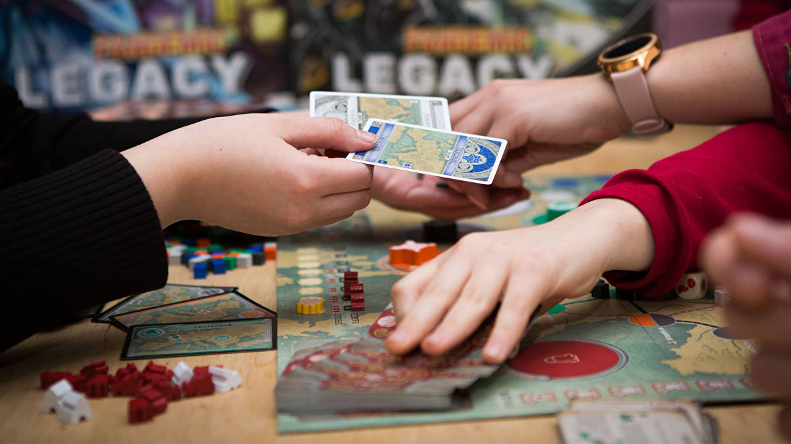

Tabletop Games
Tabletop games are games that are normally played on a table
or other flat surface, such as board games, card games, dice games, miniature
wargames, or tile-based games. There are many examples of board games you
may have heard of, and there are all sorts of games you can play. From chess
to checkers, to Catan and Monopoly, to even Dungeons and Dragons, there are
all sorts of games that you can play, most of these will recommend playing
with other players too!